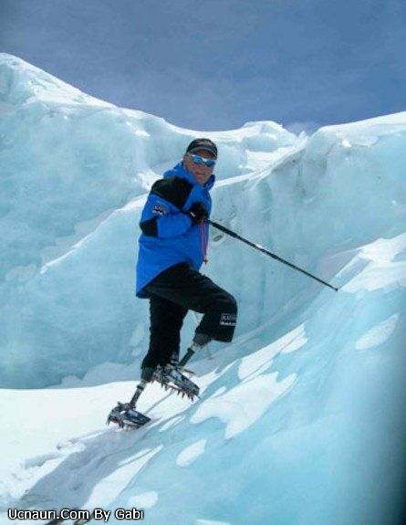
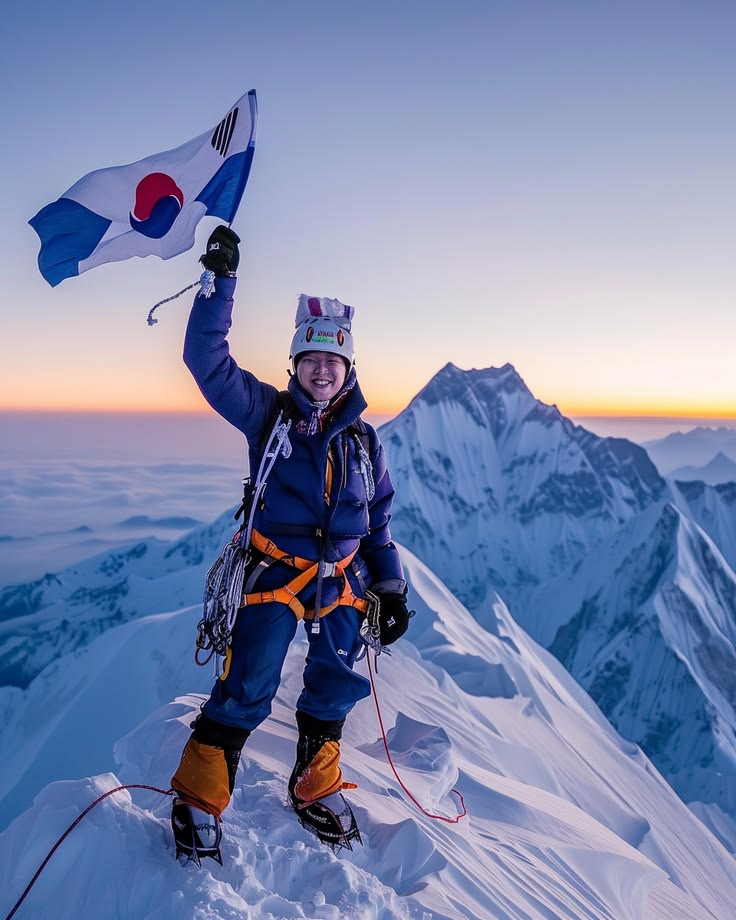
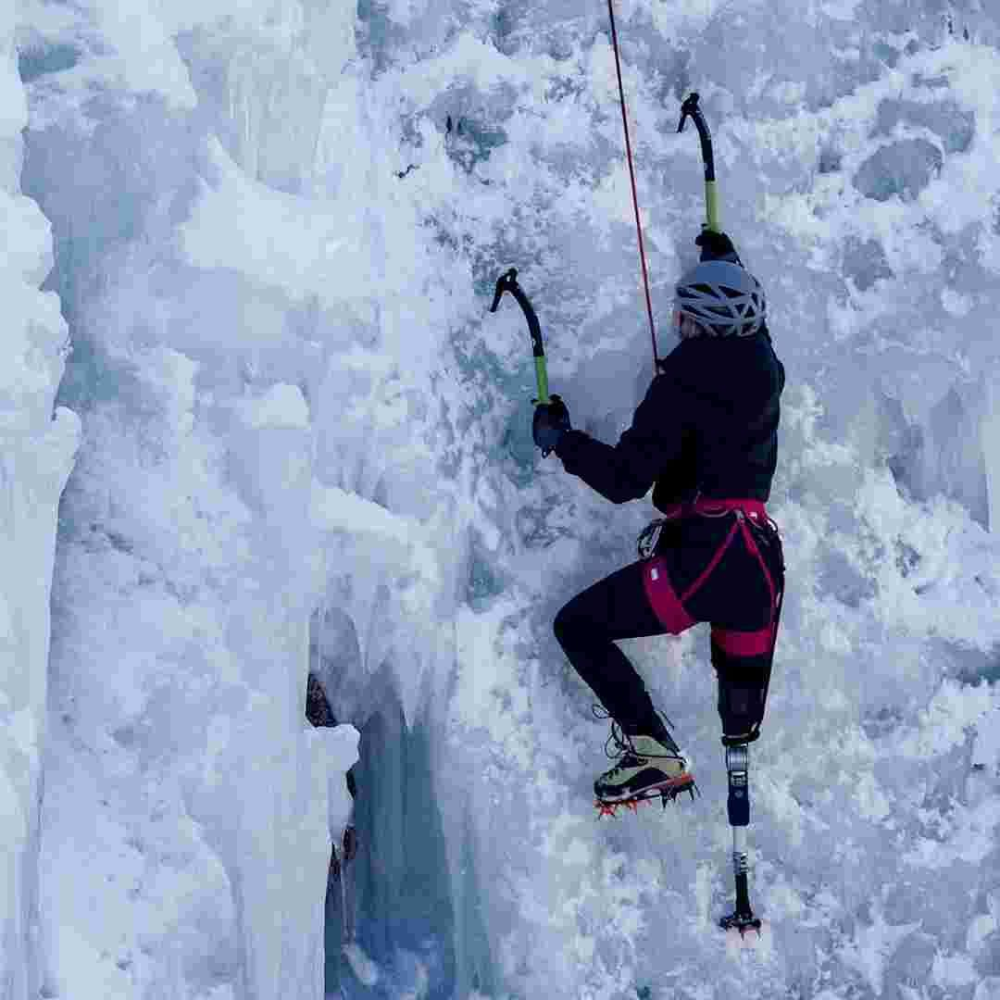
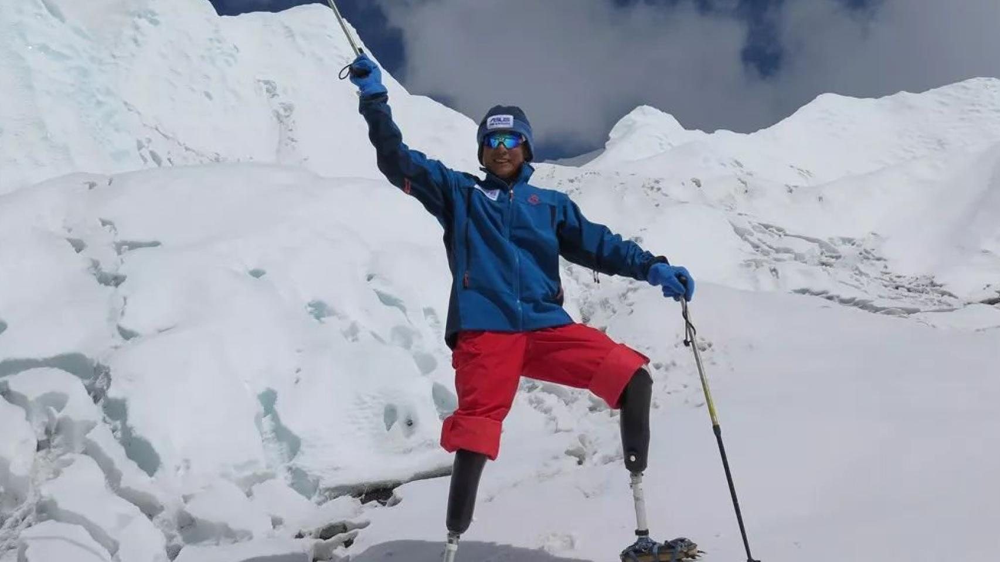

- Duración: 3 jornadas de entrenamiento
- Nivel técnico: Inicial, sin experiencia previa requerida
- Accesibilidad: Adaptado para prótesis y baja visión / ceguera, con guía 1:1
AVENTURAS - RETOS - EXIGENCIAS - AVENTURAS - RETOS - EXIGENCIAS - AVENTURAS - RETOS - EXIGENCIAS - AVENTURAS - RETOS - EXIGENCIAS - AVENTURAS - RETOS - EXIGENCIAS - AVENTURAS
AVENTURAS - RETOS - EXIGENCIAS - AVENTURAS - RETOS - EXIGENCIAS - AVENTURAS - RETOS - EXIGENCIAS - AVENTURAS - RETOS - EXIGENCIAS - AVENTURAS - RETOS - EXIGENCIAS - AVENTURAS
Desafiá todos los límites
Demuestra que la verdadera fuerza surge cuando la adversidad se convierte en impulso.
Entrenamos a:
PERSONAS CON DISCAPACIDAD MOTRIZ:
Sin piernas, sin brazos, con prótesis o uso de apoyos técnicos.
Adaptación de prótesis.
Mantené el foco o el mouse sobre esta tarjeta para ver un dato técnico adicional.PERSONAS CON DISCAPACIDAD VISUAL:
Ciegos/baja visión, acompañados de guías especializados.
Profesor guía personal.
Mantené el foco o el mouse sobre esta tarjeta para ver un dato técnico adicional.Héroes de la montaña
Cada imagen que ves aquí es prueba de que la verdadera fuerza se mide en quienes se atreven a desafiar lo imposible.
El carrusel se desplaza automáticamente. Pasá el mouse o moveté con Tab por encima para pausarlo y leer con calma.
-

Héctor Valdez (54 años)
Sin piernas
Monte Everest
-

Lee Mina (33 años)
Ciego
Fitz Roy
-

Marina Sosa (45 años)
Amputación transfemoral
Aconcagua
-

Diego Rogel (62 años)
Sin piernas
Cerro Torre
¿Cómo te preparamos?
-
Analizamos tu condición física, experiencia y objetivos.
-
Fortalecimiento, movilidad y resistencia.
-
Progresión en roca, nieve y terrenos complejos.
-
Prácticas en condiciones controladas.
-
La prueba final. La montaña. La decisión. La cumbre.
EXPEDICIONES
MONTE ACONCAGUA
Ascenso progresivo por rutas adaptadas, trabajo técnico en altura para la cumbre más alta de América.
VER MÁS →Las grandes cumbres exigen grandes procesos.
- Duración: 8 semanas de preparación + expedición
- Nivel técnico: Intermedio a avanzado
- Accesibilidad: Protocolos específicos por tipo de prótesis y guiado verbal de precisión
- Duración: 12 semanas de preparación + expedición
- Nivel técnico: Avanzado, expedición previa recomendada
- Accesibilidad: Equipo de rescate y guías certificados en deporte adaptado
LA COMUNIDAD SIGUE SUBIENDO
Somos la opción más confiable para ayudar a romper todas esas metas imposibles. Te preparamos para eso.
Expediciones
Más de 50 expediciones realizadas.Alumnos
Más de 800 alumnos acumulados.Expediciones x año
Más de 15 expediciones por año.Profesores experimentados
30 profesores experimentados.LUCHÁ POR LA CIMA, TE ESTAMOS ESPERANDO
Tenes que dar el primer paso. Conversemos sobre tu experiencia y objetivos.